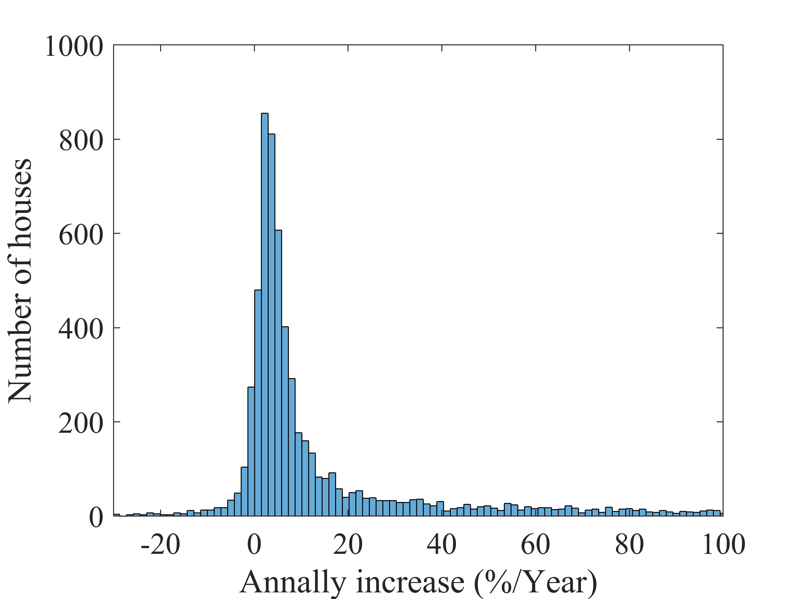

欢迎来到赵宇彤的个人网站!
如何用MATLAB看懂温尼伯房地产
对于国人来说，投资房地产几乎是每个成年人绕不开的话题。刚来加拿大的前几年，有一次温尼伯南区要增设一个大功率的手机信号塔，因此开了一次听证会，我也去凑了凑热闹。从我的角度来说，我是支持这个计划的， 因为我对温尼伯的手机信号不满已久。而且我的研究方向涉及到微波——手机信号的载体，对于其对健康的影响比大部分人都更了解一些，因此我并不担心信号塔的安全性。会议期间我发现不管是国人还是加拿大人都对这个计划充满敌意，有的人认为这会对健康造成伤害，而更多的华人担心，这是否会影响房价。 本文着眼于分析温尼伯加拿大的房地产数据，作为一个简单的大数据分析项目，旨在找出房产走势的关键数据和影响因素。
特别注意：温尼伯把住宅分为两大类，一种是房屋，另一种是公寓（Condominiums）。本文只考虑了房屋的交易记录，而公寓的走势没有包含在这些图表之中。
数据来源
将房产估值和销售数据公开的加拿大城市屈指可数，温尼伯做为其中之一提供了一个不错的研究对象，正巧又是笔者生活了五年的城市。疫情期间的空闲时间又为笔者提供了创作的可能。 温尼伯市政的房产估值（property accessment）提供了多种数据形式, 从温尼伯市政府数据公开链接可以获取本年度温尼伯市辖区的全部资料， 政府估值作为收税的依据有着重要的参考价值，比如我们可以得知该社区的平均价格，您看中的房产的价格等等。
除政府估值外，市政还提供了2010年以来的房产交易记录（sale book），每两年以pdf格式的书籍发布一次。目前可以得到的有2016和2018年两年的pdf交易记录，发布地址：
不动产交易手册查询入口（温尼伯官方- 英文网站）根据其中的信息，我们可以使用MATLAB中的读取文件的信息和正则表达式生成容易处理的文件，最终得到2010-2020年度温尼伯市房产交易的全部资料。然而由于数据发布的滞后性，我们很难得到当前的房地产市场走向。 幸运的是，房产的特性不同于股票等证券，绝大部分人持有房产是一个长期的过程。而且由于高昂的交易税费，短期内购买并售出并不能获利很多。 因此缺少最新数据并不能减少本项目的实际参考意义。
For sold是一个由温尼伯人Nick Verwymeren制作的网站，该网站按地图展示了2010年到2016年4月的销售数据。本项目由此得到了一些灵感。
特别声明： 由于市政府不对数据的绝对准确性做担保。各种原因造成的原始数据问题，本文同样无法保证。因此本文不承担任何数据的有关责任。在此只能给出统计学的趋势分析，作为利益无关的第三方，希望您能在阅读本文后 可以获知温尼伯房地产市场的基本行情。尽最大可能的保证您的切身利益、房产交易的公平性。
基本信息
2019年度，温尼伯本市有23万3860个不动产单位，包括住宅、商业中心、博物馆甚至农业用地等等。其中住宅有19万4251栋。
作为价值最高的房地产，Polo Park 购物中心以 7亿3718万加元位列全市第一。
本省最高学府，曼尼托巴大学（Fort Garry校区）以 3亿3887万加元 位列最值钱的教育机构，同时健康医学中心（HSC）以 2亿3478万加元 位列第二。
最贵的个人房产位于 550 Park Blvd West，建于1956年，建筑面积 9860平方尺（916平方米），总价值为475万加元。
百万以上的住宅共有1015栋，五十万以上的住宅则有1万2825栋。三十万以上8万9625栋，二十万以上有16万2236栋。
最古老的住宅位于167 La Verendrye street，始建于1870年，至今已有150年历史。
看见数据
图1根据地图给出了温尼伯房地产建筑年份，从图中可以看出温尼伯城市的发展历史。市中心downtown的建筑大多成型在19世纪10年代， 当时温尼伯是加拿大境内的第三大城市，扮演了重要铁路枢纽的角色并逐渐繁荣起来。随着时间的推移，城市的边界不断向外扩张， 直到今天仍在进行。如果读者细心。你会注意到蓝色为主的市中心星星点点的暗红色，这些则对应着新世纪以来的建筑重建。

图2根据时间画出了1900年以来的温尼伯新增房屋数量。 1900-1910年代，温尼伯经历了蓬勃的发展并建设了大量的住宅，直到1914-1918年，第一次世界大战中后期， 温尼伯的房产市场转入冰期。随着一战士兵的回国、战后经济衰退和工人运动的发展引爆了1919年温尼伯大罢工。该事件直接影响到了温尼伯未来若干年的发展。 之后随着经济复苏，温尼伯房地产市场也缓慢恢复，直到1929年，资本主义世界的股市崩盘引爆了大萧条，人们大量失业，使得新建房屋的数量一度触底。 直到第二次世界大战的爆发，政府的战争支出导致了萧条的经济从大萧条中复苏。由于战争带来的高就业率，战争结束时，被压抑的需求推动了住房发展，把新建房屋数量推到了一个高峰。 随之而来的是1950年红河洪水，淹没了城市的大部分地区，以至于动用了军队和红十字会进行救援。当年城市建设基本停滞。本次洪水也促成了政府修建红河泄洪水道。 此后十多年的战后经济复苏也带来了大量的新增房屋。直到1980年，北美陷入了经济衰退。同年，联邦政府出台了一系列经济刺激计划，并维持了7年。1987年美国股灾后， 房地产陷入了低迷的状态。进入新世纪，房屋新增缓慢回升。因为温尼伯的国际化程度不高，即便是2008年的金融海啸也没有对该城的房屋新增产生明显的影响。 2020年新冠疫情还在全球范围蔓延，由此带来的超高失业率和又会对房地产的影响又是一个未知的形式了。
作者私货: 对比一战二战战后截然不同的表现，恰恰能说明两场战争的性质不同。 一战是落后的、重新瓜分世界的、争夺全球霸权的一场战争，战后马上发生的大罢工恰恰反应了激化的社会矛盾、风起云涌的社会主义思潮。因此战后的复苏很弱，进而紧随而来的大萧条更是无可避免的影响了温尼伯这个小城。 二战是进步的、正义的反法西斯战争。客观上以科学技术的进步发展、极高的就业率和战后稳定的国际关系，在战后使得普通人的生活受益。 这些因素综合起来反应在温尼伯的新增房屋数量随时间的变化关系上，感觉也是很有意思的一件事。 此次新冠疫情带来的影响可以分为两部分，一种是国际买家尤其是中国国内的买家会大幅下降，造成一部分的交易量下降， 另一方面，加拿大国内正常交易的进行，甚至因为经济困难引起的断供、抛售等行为可能存在着一些机会。
另一项指标是价格分布，能间接衡量收入分布来看社会分配结构是否合理。图3反应了房产价格的分布从1万加元到100万加元的分布（去掉了占总量0.3%的大于100万加元的极端值），从图中可知，温尼伯的房产价格呈现正态分布。其中平均数为30.19万元，众数为28.9万元，中位数为28.4千元，三数相差不大，反映了市场的健康合理性。 标准差（sigma）为13.19万元，由此可知有68.2%的房屋分布在（17.0-43.4）万元区间，95.4%的房屋在（1.0-56.6）万元区间。99.5%的房屋在69.7万元以下。
温尼伯房价的价格地图由图4 给出。从图中可以看出一些特点，比如温尼伯房产的价格总体呈现北区低而南区高。市中心Downtown/交换区exchange district由于高楼林立，办公楼、写字楼的存在构成了forks附近的深红色区域，对应着繁华的商业中心。 然而由于不断恶化的治安环境和房屋老化等因素，紧紧围绕着的市中心的是深蓝色的低价格房产区。Pembina高速、portage高速等大路沿线呈现了随着道路颜色的深红色区域，也是由于门面店铺的存在和蕴含的商业价值。 另外在红河和阿西尼博因河沿线分布着一片一片的红色区域，则对应着集中分布的豪华河景房。均价最高的社区是毗邻阿西尼博因公园的Tuxedo社区，也是最贵房产的所在社区。
如果我们放眼华人集中的南区，则均价最高的是Linden woods社区和brigdge water forest社区（左下方位），卓越的地理位置和较新的房龄使得这里成了很多华人投资的选择。 此外靠近曼大的社区比如Fort Richmond、Fort Richmond West、farfield park等由于靠近大学、交通便利，则成为了上班族和留学生的首选。 对比图1和图4，我们不难发现房屋的价格和年限存在一定的正比关系，但是也不是简单的线性关系，由各种原因综合决定。 比如学区、交通路线、房屋质量、社区平均质量等等因素。取决于市政的数据情况，我们还会在未来探究这些联系。

以上是基于温尼伯当前房地产市场的静态分析。数据仅仅来源于当前的政府评估。由于市政并没有提供历史评估记录，因此随时间变化的评估价格无处可查。
流动性及增值性
投资购买任何一套房的时候，不能只考虑买，还要考虑未来是不是容易出手，也就是所谓的流动性————把资产变成现金的容易程度。一旦忽视流动性、流动性缺失，那么，从签购房合同的那一刻起，就注定了未来卖房子的举步维艰。 基于2010年1月1日到2018年4月1日的住宅交易数据，我们可知共有82，085条交易记录。涵盖了63，001个独立房产，占温尼伯私人住宅数量的32.43%，绝大部分（共50，995个）的房产在8年的时间里只交易过一次，占交易总量的62.12%。 由此可知，大部分持有房产总体上是一项长期投资。超过30%的交易总量百分比对于房地产而言则是一个令人惊讶的高数据，预示着房地产的活跃程度和经济活力。因此笔者判断温尼伯的房产的流动性非常强。 如果我们按时间顺序画出温尼伯的房产交易曲线（如图5），可见交易量随季节呈现周期性变化。夏季尤其是六七月份是房产交易的最高峰。随着温度的降低，房产交易也随之降低，交易的寒冬则从十二月至次年二月。 季节的变化无时无刻不在影响人们的生活和经济的走势，能从这些数据中看到大自然的神奇影响。总体来说，温尼伯的房产交易量随时间变化平稳，流动性有保障。
除去流动性，还有另外一个重要指标————增值性，也是人们通常最最最关心的问题。 在温尼伯有10，038栋住宅则有两次或者两次以上的交易记录。如果我们考虑到两次的交易价格的差距和时间的间隔，就可以计算出每年的增值率。考虑到其中有1元转让的及特殊情况，我们去掉这些极端值。则可以得到平均增值率为7.93%，标准差为10.24%，中位数为4.46%，区间众数为2.22%。考虑到加拿大的平均通货膨胀率2.4%，则实际平均增值率在5.53%左右，考虑到中位数实际增长为2.06%，区间众数实际增长为-0.18%。 在考虑通货膨胀的情况下，我们选择名义增值率1.4% ~ 3.4%区间 / 实际增值率-1% ~ 1% 的房屋为保值，小于此区间的为贬值，高于此区间的增值。 则我们可以通过计算得出，相当部分房屋（占比为18.10%）为保值的作用。有15.30%的房屋出现了实际贬值的情况，剩余55.5%则是增值情况。 因此市场风险与机遇并存，无脑买房并不能让您的财产简简单单的增值，有将近一半的房产没有出现增值，需要谨慎考虑，做出合理的行动。 对于目前持币观望的买家来说，慧眼识房，分析出有潜力的社区和房产才能立于不败之地，规避风险的同时获得投资的回报。

平均交易价格随时间的变化也能反应出市场的增值变化趋势，图中再一次的展示了季节影响的周期性规律。有数据以来，最低平均价格出现在2010年3月，为19万9千加元。随时间推移，最高平均价格出现在2017年7月，为32万8千加元. 使用简单线性拟合可知，温尼伯平均房价每个月增长950加元，则推断平均每年增长11400加元。
这些数据能做什么？
大数据可以根据需求精准分析，帮助您规避风险，做出高效科学的投资建议。为您省心省钱。
大数据根据各种公开经济数据，预测房价的未来走势。
大数据可以根据历史数据给出您房产的真实市场价值，维护您的利益。
其他基本概念
温尼伯的不动产有以下几种类型：
1. DESIGNATED HIGHER EDU 高等教育用地
2. DESIGNATED REC 休闲场所用地"
3. FARM 农业用地
4. FARM USE VALUE 农场使用价值
5. INSTITUTIONAL 机构
6. OTHER 其他
7. RESIDENTIAL 1 住宅类型1
8. RESIDENTIAL 2 住宅类型2
9. RESIDENTIAL 3 住宅类型3
10. STATUTORY PIPELINE 法定管道
11. STATUTORY RAILWAY 法定铁路
结语
本项目的最初想法是做一个个性化的数据分析网站，比如输入目标房地产的地址，网站可以输出显示一下最近今年的成交量，成交走势，小区的平均房价等等的个性化房产报告。 本文有感于我的亲身经历，因为房产交易的特殊性、数据获取的困难性，使得对于个人很难看清其中的全貌。 以上信息全部来源于公开信息、官方渠道。希望您能在阅读本文后，能对温尼伯的房地产市场有一个基本但是全面的了解。任何人转载本文请注明出处。 任何人不应以此信息牟利，如果发现类似情况，请与作者联系。 最后，祝大家心想事成，积极向上，面对生活。
附录0：销售PDF文件到可处理数据
温尼伯市政府2010年以来公布的房屋销售数据都存储在PDF文件中。很明显，这种形式的数据非常不方便处理。 有两种方法可以提取出其中的数据。第一种，如果在PDF显示的图像中同时储存了对应的文本字符，我们可以读取出来在进行正则表达式的变换。由于排版并不统一，这种情况读取出来的数据可能异常复杂（但很精确，并没有识别的错误），对此数据进行“清理”就花费了笔者大量的时间。如果仅仅显示了图像而没有任何字符， 则需要先进行ORC文本识别（光学字符识别）， 再进行第一步的操作， 这种情况下，识别产生的错误在所难免。
附录1：MATLAB爬虫
将地址变成经纬度的过程被称为坐标化（Geocoding），获取经纬坐标在数据可视化的过程中非常重要。双精度的坐标数据更能将 房产的销售记录直观的在地图上表示出来。 MATLAB作为一种科学编程软件，写出一个简单的爬虫来获取静态网页的数据并完成地址坐标化。爬虫本来并不是这款软件的长处， 而在做该项目初期，笔者还在Python的初学阶段，而MATLAB作为使用多年的软件更显得得心应手，因此这个项目使用了并不常见的MATLAB写了简单的爬虫。
个性化订制(数据报告) / 联系我们
项目公开数据之外，本项目组提供个性化定制的数据，具体请咨询作者。
我们本着诚信、开放的原则欢迎合作。 具体情况请通过 电话/短信/微信/电邮 垂询。
电话/短信: +1（204）293-0625
电子邮箱: zhaoyutong43210@gmail.com
微信: 请见个人网站二维码。
微信公众号：加拿大的心跳 Canadas_Heart_Beats
本文最后更新于2021年3月8日。